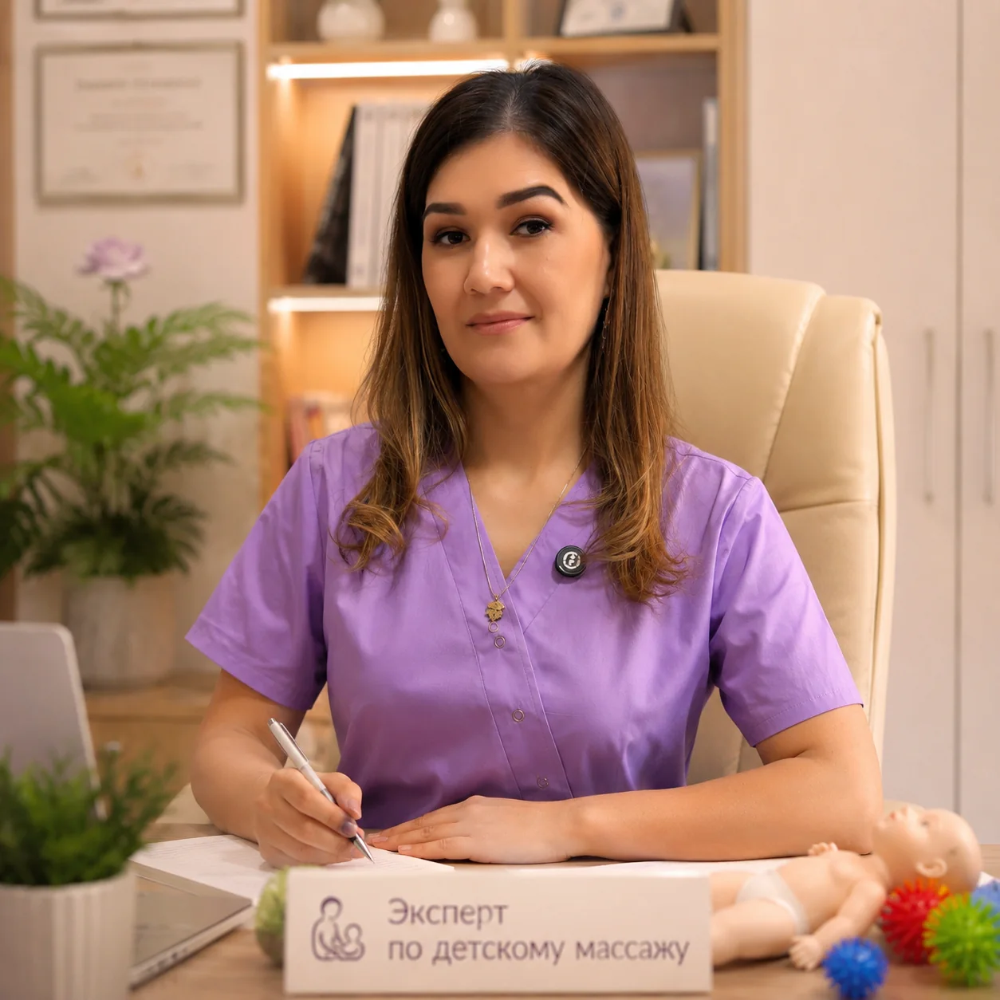
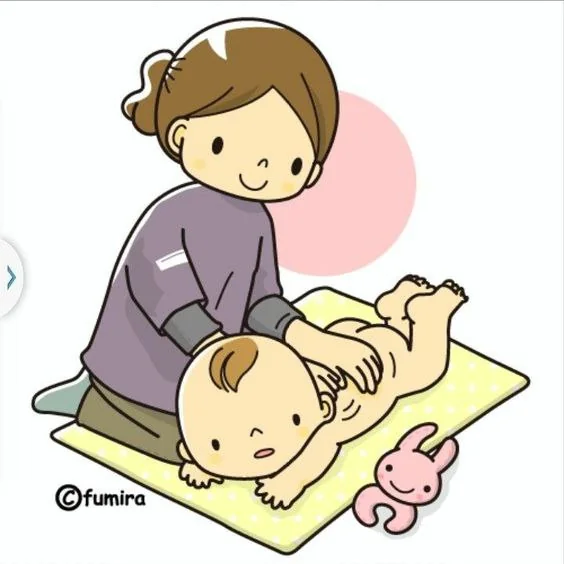
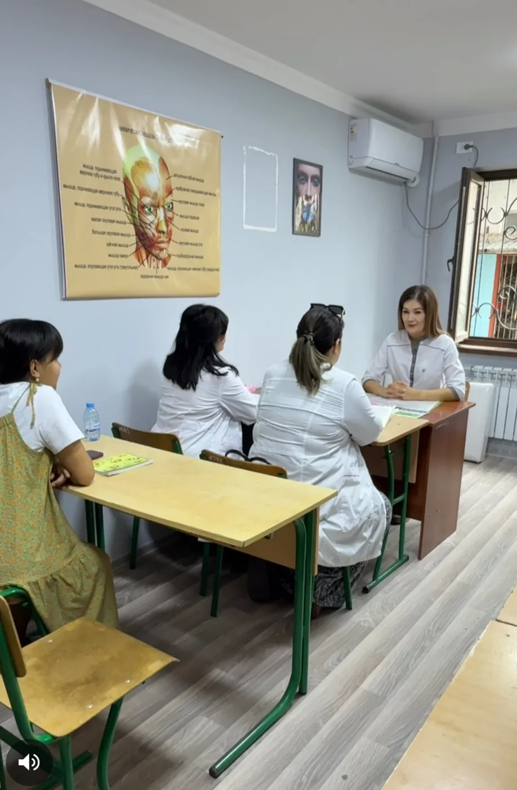
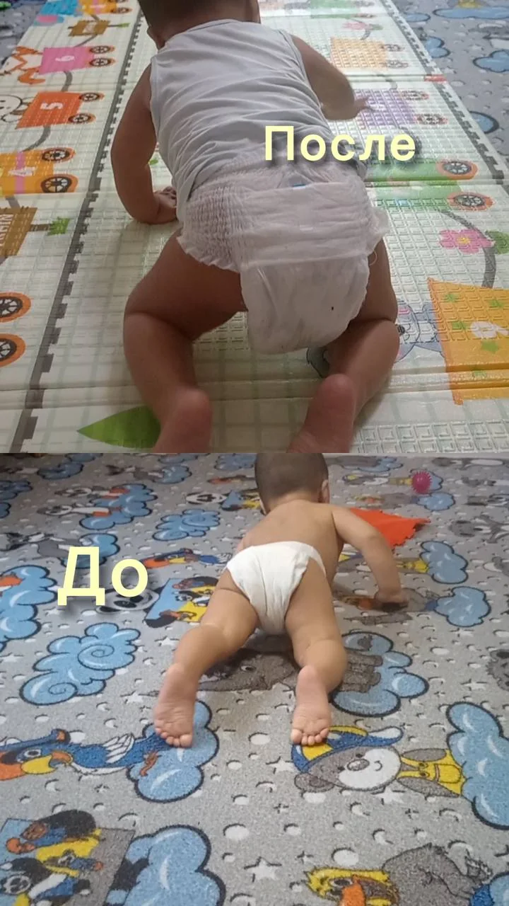
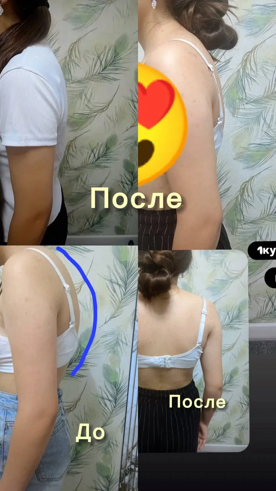
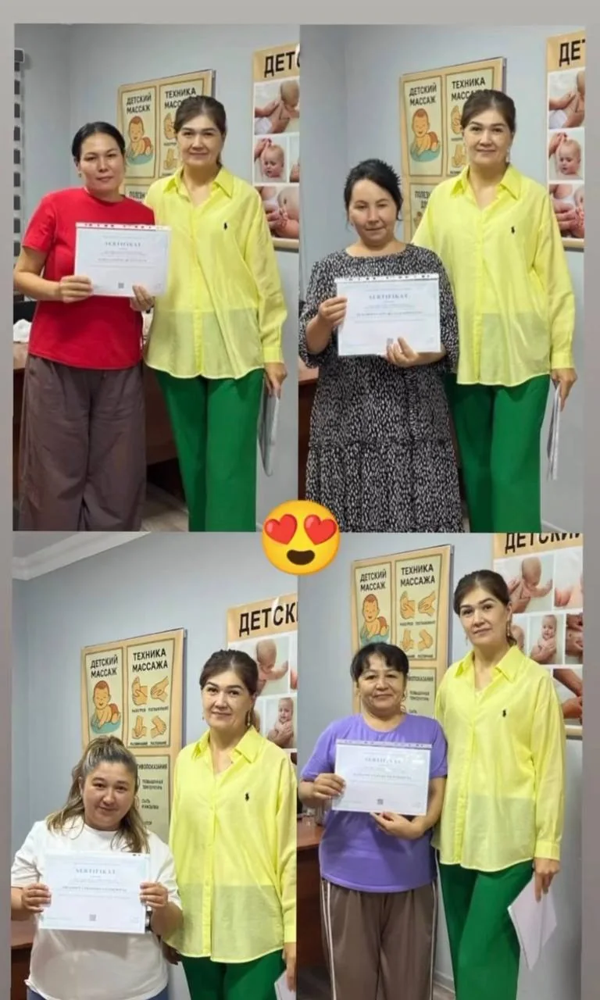
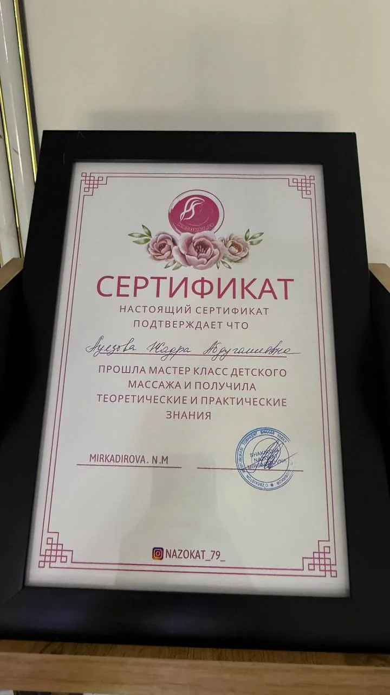
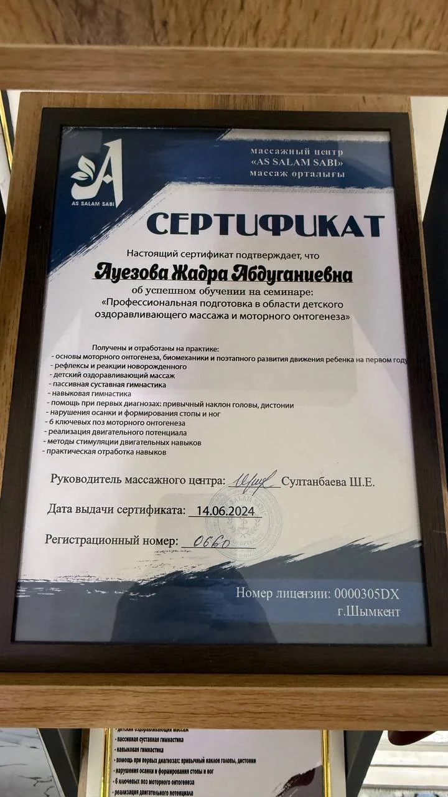
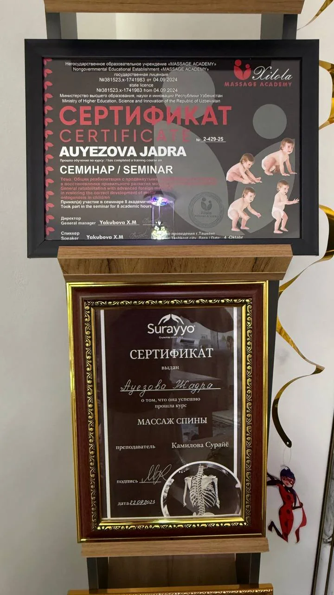

Профессиональный детский и женский массаж
Забота, которую чувствует тело
Бережный индивидуальный подход к детям, женщинам и мамам. Профессиональный лечебный массаж в спокойной и комфортной атмосфере.
350+ довольных клиентов доверили нам заботу о себе и своих детях

10лет опыта

Бережно к детямс учётом возраста
О Jadra Masaj
Профессионализм, спокойствие и внимание к каждому клиенту

“
Знания постоянно дополняются обучением и практикой.
Jadra Masaj специализируется на профессиональном лечебном детском и женском массаже. В работе важны бережность, понятная коммуникация, комфорт и индивидуальный подход.
01
Детский массаж
Деликатная работа с малышами с учётом возраста и индивидуальных особенностей.
02
Женский массаж
Комфортная атмосфера и внимательный профессиональный подход для женщин и мам.
03
Обучение
Практические занятия и передача профессиональных навыков будущим специалистам.
Услуги
Основные направления
Подберём подходящий формат после короткой консультации. Стоимость и длительность зависят от выбранной услуги и курса.
Детский лечебный массаж
Бережная работа с ребёнком, комфортный темп и внимание к индивидуальным особенностям.
Уточнить и записаться↗Женский массаж
Процедуры для женщин и мам в спокойной обстановке с индивидуальным подбором подхода.
Уточнить и записаться↗Курс и обучение массажу
Практическое обучение для тех, кто хочет освоить профессиональные навыки и получить опыт на практике.
Подробнее в Instagram↗Бережная работа
↗
Массаж для ребёнка — это прежде всего доверие и комфорт
Перед записью можно написать и уточнить, какой формат подойдёт именно вашему ребёнку.
Как проходит запись
От первого сообщения до сеанса — всё просто
Перед посещением можно уточнить возраст, запрос и удобное время. Это помогает заранее подобрать подходящий формат.
Напишите нам
Свяжитесь через Telegram, Instagram или по телефону.
Короткая консультация
Уточним возраст, ваши пожелания и подходящую услугу.
Выбираем время
Согласуем удобное время и подтвердим запись.
Приходите на сеанс
Вас ждёт спокойная атмосфера и индивидуальный подход.
Практика
Примеры работы
Результаты индивидуальны. Фотографии показывают примеры из практики и не являются гарантией одинакового результата для каждого клиента.


350+
клиентов уже выбрали Jadra Masaj
Главный принцип — не шаблонная процедура, а внимательная работа с каждым человеком.
Задать вопрос в Telegram ↗Обучение и сертификаты
Постоянное профессиональное развитие
Практика, обучение и подтверждение квалификации — важная часть профессионального подхода.




Отзывы
Слова наших клиентов
Реальные сообщения клиентов после процедур и курсов.
Прайс
Стоимость одного сеанса
Выберите нужное направление. Если не уверены, что подойдёт лучше, напишите нам — подскажем перед записью.
01
Детский массаж
Общий массаж · 3 месяца–3 года80 000 сум
Общий массаж · 4–6 лет100 000 сум
Общий массаж · 7–10 лет120 000 сум
Общий массаж · старше 10 лет150 000 сум
Массаж ног · 1–6 лет50 000 сум
Массаж ног · от 7 лет70 000 сум
02
Женский массаж
Общий массаж300 000 сум
Массаж спины150 000 сум
Массаж ног150 000 сум
Массаж лица100 000 сум
Медовый массаж200 000 сум
Огненный массаж300 000 сум
Цены указаны за один сеанс. Перед записью можно уточнить подходящую услугу и свободное время.
Записаться в TelegramЧастые вопросы
Перед первым посещением
Короткие ответы на вопросы, которые чаще всего возникают перед записью.
Напишите в Telegram или Instagram либо позвоните по номеру +998 99 402 90 85. Мы подберём удобное время.
В Газалкенте по адресу: ул. Беруни, 6/45. Ниже есть карта и кнопка построения маршрута.
В прайсе общий детский массаж начинается с 3 месяцев. Подходящий формат лучше уточнить перед записью.
Напишите нам перед записью: уточним ваш запрос и подскажем подходящий вариант из прайса.
Русский, узбекский и казахский. Язык сайта можно переключить в верхнем меню.
Результаты индивидуальны и зависят от множества факторов. При медицинских вопросах и противопоказаниях заранее проконсультируйтесь с врачом.
Контакты и запись
Напишите — ответим на вопросы и подберём удобное время
Запись доступна через Telegram, Instagram или по телефону. Мы находимся в Газалкенте, ул. Беруни, 6/45.
Локация
Газалкент, ул. Беруни, 6/45
Нажмите ниже, чтобы открыть адрес на карте и построить маршрут.
Построить маршрут ↗